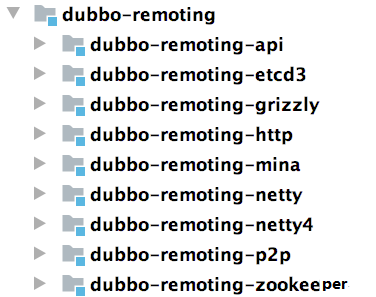

搭建 Dubbo 源码环境
Dubbo 架构简介
简单介绍一下 Dubbo 架构中的核心角色，简单了解一下 Dubbo 的架构。下图是Dubbo核心架构图，展示了 Dubbo 核心架构：
Registry：注册中心。 负责服务地址的注册与查找，服务的 Provider 和 Consumer 只在启动时与注册中心交互。注册中心通过长连接感知 Provider 的存在，在 Provider 出现宕机的时候，注册中心会立即推送相关事件通知 Consumer。
Provider：服务提供者。 在它启动的时候，会向 Registry 进行注册操作，将自己服务的地址和相关配置信息封装成 URL 添加到 ZooKeeper 中。
Consumer：服务消费者。 在它启动的时候，会向 Registry 进行订阅操作。订阅操作会从 ZooKeeper 中获取 Provider 注册的 URL，并在 ZooKeeper 中添加相应的监听器。获取到 Provider URL 之后，Consumer 会根据负载均衡算法从多个 Provider 中选择一个 Provider 并与其建立连接，最后发起对 Provider 的 RPC 调用。 如果 Provider URL 发生变更，Consumer 将会通过之前订阅过程中在注册中心添加的监听器，获取到最新的 Provider URL 信息，进行相应的调整，比如断开与宕机 Provider 的连接，并与新的 Provider 建立连接。Consumer 与 Provider 建立的是长连接，且 Consumer 会缓存 Provider 信息，所以一旦连接建立，即使注册中心宕机，也不会影响已运行的 Provider 和 Consumer。
Monitor：监控中心。 用于统计服务的调用次数和调用时间。Provider 和 Consumer 在运行过程中，会在内存中统计调用次数和调用时间，定时每分钟发送一次统计数据到监控中心。监控中心在上面的架构图中并不是必要角色，监控中心宕机不会影响 Provider、Consumer 以及 Registry 的功能，只会丢失监控数据而已。
搭建Dubbo源码环境
当然，要搭建Dubbo 源码环境，你首先需要下载源码。这里你可以直接从官方仓库 https://github.com/apache/dubboFork 到自己的仓库，直接执行下面的命令去下载代码：
1 | git clone git@github.com:xxxxxxxx/dubbo.git |
然后切换分支，这里我们用Dubbo 2.7.7 这个版本：
1 | git checkout -b dubbo-2.7.7 dubbo-2.7.7 |
接下来，执行 mvn 命令进行编译：
1 | mvn clean install -Dmaven.test.skip=true |
最后，执行下面的命令转换成 IDEA 项目：
1 | mvn idea:idea // 要是执行报错，就执行这个 mvn idea:workspace |
然后，在 IDEA 中导入源码，因为这个导入过程中会下载所需的依赖包，所以会耗费点时间。
Dubbo源码核心模块
在 IDEA 成功导入 Dubbo 源码之后，看到的项目结构如下图所示：
简单介绍一下这些核心模块的功能，至于详细分析，后面再说：
- dubbo-common 模块： Dubbo 的一个公共模块，其中有很多工具类以及公共逻辑，例如课程后面紧接着要介绍的 Dubbo SPI 实现、时间轮实现、动态编译器等。
- dubbo-remoting 模块： Dubbo 的远程通信模块，其中的子模块依赖各种开源组件实现远程通信。在 dubbo-remoting-api 子模块中定义该模块的抽象概念，在其他子模块中依赖其他开源组件进行实现，例如，dubbo-remoting-netty4 子模块依赖 Netty 4 实现远程通信，dubbo-remoting-zookeeper 通过 Apache Curator 实现与 ZooKeeper 集群的交互。

- dubbo-rpc 模块： Dubbo 中对远程调用协议进行抽象的模块，其中抽象了各种协议，依赖于 dubbo-remoting 模块的远程调用功能。dubbo-rpc-api 子模块是核心抽象，其他子模块是针对具体协议的实现，例如，dubbo-rpc-dubbo 子模块是对 Dubbo 协议的实现，依赖了 dubbo-remoting-netty4 等 dubbo-remoting 子模块。 dubbo-rpc 模块的实现中只包含一对一的调用，不关心集群的相关内容。

dubbo-cluster 模块： Dubbo 中负责管理集群的模块，提供了负载均衡、容错、路由等一系列集群相关的功能，最终的目的是将多个 Provider 伪装为一个 Provider，这样 Consumer 就可以像调用一个 Provider 那样调用 Provider 集群了。
dubbo-registry 模块： Dubbo 中负责与多种开源注册中心进行交互的模块，提供注册中心的能力。其中， dubbo-registry-api 子模块是顶层抽象，其他子模块是针对具体开源注册中心组件的具体实现，例如，dubbo-registry-zookeeper 子模块是 Dubbo 接入 ZooKeeper 的具体实现。
dubbo-monitor 模块： Dubbo 的监控模块，主要用于统计服务调用次数、调用时间以及实现调用链跟踪的服务。
dubbo-config 模块： Dubbo 对外暴露的配置都是由该模块进行解析的。例如，dubbo-config-api 子模块负责处理 API 方式使用时的相关配置，dubbo-config-spring 子模块负责处理与 Spring 集成使用时的相关配置方式。有了 dubbo-config 模块，用户只需要了解 Dubbo 配置的规则即可，无须了解 Dubbo 内部的细节。

- dubbo-metadata 模块： Dubbo 的元数据模块（本课程后续会详细介绍元数据的内容）。dubbo-metadata 模块的实现套路也是有一个 api 子模块进行抽象，然后其他子模块进行具体实现。
- dubbo-configcenter 模块： Dubbo 的动态配置模块，主要负责外部化配置以及服务治理规则的存储与通知，提供了多个子模块用来接入多种开源的服务发现组件。

Dubbo 源码中的 Demo 示例
在 Dubbo 源码中我们可以看到一个 dubbo-demo 模块，共包括三个非常基础 的 Dubbo 示例项目，分别是： 使用 XML 配置的 Demo 示例、使用注解配置的 Demo 示例 以及 直接使用 API 的 Demo 示例 。下面我们将从这三个示例的角度，简单介绍 Dubbo 的基本使用。同时，这三个项目也将作为后续 Debug Dubbo 源码的入口，我们会根据需要在其之上进行修改 。不过在这儿之前，你需要先启动 ZooKeeper 作为注册中心，然后编写一个业务接口作为 Provider 和 Consumer 的公约。
启动 ZooKeeper
在前面 Dubbo 的架构图中，可以看到 Provider 的地址以及配置信息是通过注册中心传递给 Consumer 的。 Dubbo 支持的注册中心尽管有很多， 但在生产环境中， 基本都是用 ZooKeeper 作为注册中心 。因此，在调试 Dubbo 源码时，自然需要在本地启动 ZooKeeper。
首先，下载 zookeeper-3.4.14.tar.gz 包（下载地址： https://archive.apache.org/dist/zookeeper/zookeeper-3.4.14/）。下载完成之后执行如下命令解压缩：
1 | tar -zxf zookeeper-3.4.14.tar.gz |
解压完成之后，进入 zookeeper-3.4.14 目录，复制 conf/zoo_sample.cfg 文件并重命名为 conf/zoo.cfg，之后执行如下命令就可以启动 ZooKeeper了。
1 | >./bin/zkServer.sh start |
业务接口
在使用 Dubbo 之前，还需要一个业务接口，这个业务接口可以认为是 Dubbo Provider 和 Dubbo Consumer 的公约，反映出很多信息：
Provider ，如何提供服务、提供的服务名称是什么、需要接收什么参数、需要返回什么响应；
Consumer ，如何使用服务、使用的服务名称是什么、需要传入什么参数、会得到什么响应。
dubbo-demo-interface 模块就是定义业务接口的地方，如下图所示：
其中，DemoService 接口中定义了两个方法：
1 | public interface DemoService { |
Demo 1：基于 XML 配置
在 dubbo-demo 模块下的 dubbo-demo-xml 模块，提供了基于 Spring XML 的 Provider 和 Consumer。
先来看 dubbo-demo-xml-provider 模块，其结构如下图所示：
在其 pom.xml 中除了一堆 dubbo 的依赖之外，还有依赖了 DemoService 这个公共接口：
1 | <dependency> |
DemoServiceImpl 实现了 DemoService 接口，sayHello() 方法直接返回一个字符串，sayHelloAsync() 方法返回一个 CompletableFuture 对象。
在 dubbo-provider.xml 配置文件中，会将 DemoServiceImpl 配置成一个 Spring Bean，并作为 DemoService 服务暴露出去：
1 | <!-- 配置为 Spring Bean --> |
还有就是指定注册中心地址（就是前面 ZooKeeper 的地址），这样 Dubbo 才能把暴露的 DemoService 服务注册到 ZooKeeper 中：
1 | <!-- Zookeeper 地址 --> |
最后，在 Application 中写个 main() 方法，指定 Spring 配置文件并启动 ClassPathXmlApplicationContext 即可。
接下来再看 dubbo-demo-xml-consumer 模块，结构如下图所示：

在 pom.xml 中同样依赖了 dubbo-demo-interface 这个公共模块。
在 dubbo-consumer.xml 配置文件中，会指定注册中心地址（就是前面 ZooKeeper 的地址），这样 Dubbo 才能从 ZooKeeper 中拉取到 Provider 暴露的服务列表信息：
1 | <!-- Zookeeper地址 --> |
还会使用 dubbo:reference 引入 DemoService 服务，后面可以作为 Spring Bean 使用：
1 | <!--引入DemoService服务，并配置成Spring Bean--> |
最后，在 Application 中写个 main() 方法，指定 Spring 配置文件并启动 ClassPathXmlApplicationContext 之后，就可以远程调用 Provider 端的 DemoService 的 sayHello() 方法了。
Demo 2：基于注解配置
dubbo-demo-annotation 模块是基于 Spring 注解配置的示例，无非就是将 XML 的那些配置信息转移到了注解上。
我们先来看 dubbo-demo-annotation-provider 这个示例模块：
1 | public class Application { |
这里，同样会有一个 DemoServiceImpl 实现了 DemoService 接口，并且在 org.apache.dubbo.demo.provider 目录下，能被扫描到，暴露成 Dubbo 服务。
接着再来看 dubbo-demo-annotation-consumer 模块，其中 Application 中也是通过 AnnotationConfigApplicationContext 初始化 Spring 容器，也会扫描指定目录下的 Bean，会扫到 DemoServiceComponent 这个 Bean，其中就通过 @Reference 注解注入 Dubbo 服务相关的 Bean：
1 | @Component("demoServiceComponent") |
Demo 3：基于 API 配置
在有的场景中，不能依赖于 Spring 框架，只能使用 API 来构建 Dubbo Provider 和 Consumer，比较典型的一种场景就是在写 SDK 的时候。
先来看 dubbo-demo-api-provider 模块，其中 Application.main() 方法是入口：
1 | // 创建一个ServiceConfig的实例，泛型参数是业务接口实现类， |
这里，同样会有一个 DemoServiceImpl 实现了 DemoService 接口，并且在 org.apache.dubbo.demo.provider 目录下，能被扫描到，暴露成 Dubbo 服务。
再来看 dubbo-demo-api-consumer 模块，其中 Application 中包含一个普通的 main() 方法入口：
1 | // 创建ReferenceConfig,其中指定了引用的接口DemoService |
总结
在本文中，首先介绍了 Dubbo 的核心架构以及各核心组件的功能，接下来又搭建了 Dubbo 源码环境，并详细介绍了 Dubbo 核心模块的功能，为后续分析 Dubbo 源码打下了基础。最后还深入分析了 Dubbo 源码中自带的三个 Demo 示例，现在就可以以这三个 Demo 示例为入口 Debug Dubbo 源码了。